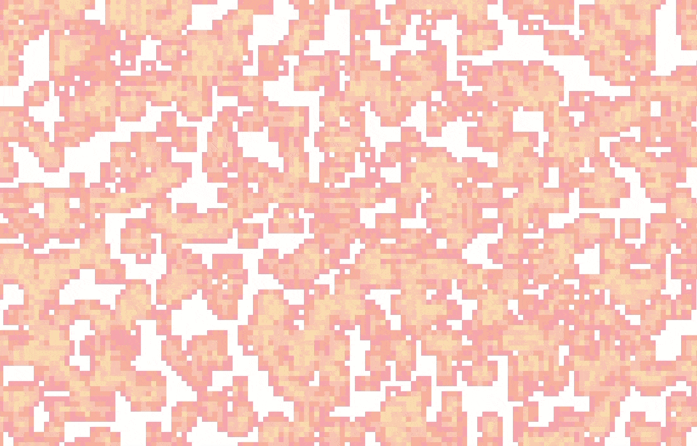

Game of Life
As with all of my processing sketches, this was made with the p5.js library. If you would like to interact with the sketch itself, click here). However, it is not designed for mobile, so your experience may vary.

As with all of my processing sketches, this was made with the p5.js library. If you would like to interact with the sketch itself, click here). However, it is not designed for mobile, so your experience may vary.